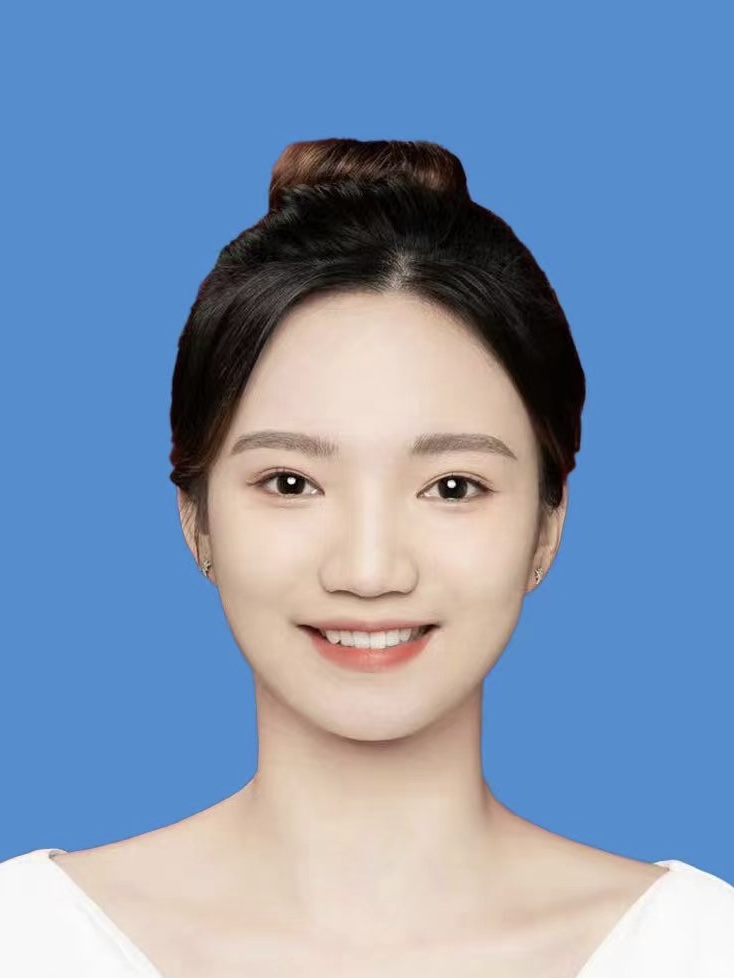

|  | Yu ZhangPh.D. student Department of Computer Science and Engineering |
I am currently a final-year Ph.D. candidate at the Department of Computer Science and Engineering,
The Chinese University of Hong Kong (CUHK), under the supervision of Prof. Bei Yu. I also work as a research intern at
NVIDIA’s Deep Learning Efficiency Research Group.
My research interests are efficient LLM training/inference, software/hardware co-design, and LLM reasoning.
Besides research, I love swimming and hiking in my spare time.
LLM Efficiency and Reasoning: [C9, C10, C11]
Mathematical Optimization: [C4, C6, C7, C8]
Federated Learning: [C5, J1]
Green Energy: [C1, C2, C3]
[C11] Yu Zhang, Hui-Ling Zhen, Mingxuan Yuan, Bei Yu, “MOSS: Efficient and Accurate FP8 LLM Training with Microscaling and Automatic Scaling”. International Conference on Learning Representations (ICLR), Rio de Janeiro, Brazil
[C10] Yu Zhang, Mingzi Wang, Lancheng Zou, Wulong Liu, Hui-Ling Zhen, Mingxuan Yuan, Bei Yu, “MixPE: Quantization and Hardware Co-design for Efficient LLM Inference”. https://arxiv.org/pdf/2411.16158
[C9] Yu Zhang, Hui-Ling Zhen, Zehua Pei, Yingzhao Lian, Lihao Yin, Mingxuan Yuan, Bei Yu, “DiLA: Enhancing LLM Tool Learning with Differential Logic Layer”, , SIGKDD Conference on Knowledge Discovery and Data Mining (KDD), Jeju, Korea, Aug. 9–13, 2026.
[C8] Yu Zhang, Hui-Ling Zhen, Mingxuan Yuan, Bei Yu, “DiffSAT: Differential MaxSAT Layer for SAT Solving”, IEEE/ACM International Conference on Computer-Aided Design (ICCAD), New Jersey, Oct. 27–31, 2024.
[C7] Yuan Pu, Fangzhou Liu, Yu Zhang, Zhuolun He, Kai-Yuan Chao, Yibo Lin, Bei Yu, “Lesyn: Placement-aware Logic Resynthesis for Non-Integer Multiple-Cell-Height Designs”, ACM/IEEE Design Automation Conference (DAC), San Francisco, Jun. 23–27, 2024.
[C6] Yu Zhang, Yuan Pu, Fangzhou Liu, Peiyu Liao, Kai-Yuan Chao, Keren Zhu, Yibo Lin and Bei Yu, “Multi-Electrostatics Based Placement for Non-Integer Multiple-Height Cells”, International Symposium on Physical Design (ISPD), March 12–15, 2024.
[C5] Yu Zhang, Wei Lin, Sisi Chen, Qingyu Song, Jiaxun Lu, Yunfeng Shao, Bei Yu and Hong Xu, “Fed2Com: Towards Efficient Compression in Federated Learning”, International Conference on Computing, Networking and Communications (ICNC), Feb. 19–22, 2024.
[C4] Yu Zhang, Yifan Chen, Zhonglin Xie, Hong Xu, Zaiwen Wen, Yibo Lin and Bei Yu, “LRSDP: Low-rank SDP for Triple Patterning Lithography Layout Decomposition”, Design Automation Conference (DAC), July 09–13, 2023.
[C3] Xudong Wang, Guoming Tang, Yi Wang, Srinivasan Keshav, Yu Zhang, “Evsense: A robust and scalable approach to non-intrusive ev charging detection”, ACM International Conference on Future Energy Systems (e-Energy).
[C2] Yu Zhang, Guoming Tang, Qianyi Huang, Yi Wang, Hong Xu, Xudong Wang, “More Behind Your Electricity Bill: a Dual-DNN Approach to Non-Intrusive Load Monitoring”, IEEE International Conference on Cyber, Physical and Social Computing (CPSCom), Aug. 22–25, 2022.
[C1] Yu Zhang, Guoming Tang, Qianyi Huang, Kui Wu, Yangjing Wu, Yi Wang, “Investigating Low-Battery Anxiety of Mobile Users”, IEEE International Conference on Cyber, Physical and Social Computing (CPSCom), Aug. 22–25, 2022.
[J1] Yu Zhang, Guoming Tang, Qianyi Huang, Yi Wang, Kui Wu, Keping Yu, Xun Shao, “FedNILM: Applying Federated Learning to NILM Applications at the Edge”, IEEE Transactions on Green Communications and Networking (TGCN), Apr. 14, 2022.
“一种基于模型松弛的大模型新微调方法”, 92056131CN01.
Research Intern, NVIDIA Research, Santa Clara, U.S., Sep 2025 - Present
Topic: Efficient Large Language Model, LLM Hallucination Detection
Research Intern, Huawei Noah's Ark Lab, HKSAR, Aug 2023 - Aug 2024
Topic: Hardware/software co-design for efficient LLM inference; Differential solver layer for LLM
Research Assistant, The Chinese University of Hong Kong, HKSAR, Nov 2021 - Jul 2022
Topic: Communication-efficient and convergence fast federated learning
Research Intern, Microsoft Research Asia, Beijing, P.R. China, Jan 2021 - Aug 2021
Topic: AISimulator
Ph.D. Computer Science and Engineering, The Chinese University of Hong Kong, Aug 2022 - present
B.S. Statistics, Central South University, Sept 2015 - Jun 2019
TNNLS, TCAD, TODAES, TGCN, VLSIJ
ISPD, KDD